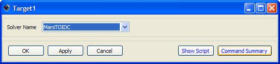

The goal of this mission is to show how to target a transfer trajectory from an Earth parking orbit to a Mars orbit via B-Plane targeting. Given a specified inclination for the final orbit, we solve for the velocity of the spacecraft in certain directions in order to determine a transfer trajectory.
You can download the script file and run it beforehand to see the final results of this tutorial: MarsBPlaneTutorial.script
Basic understanding of B-Planes and their usage in targeting a position.
Tutorials:
For this tutorial, four impulsive burns are used to maneuver a single spacecraft, and three propagators are used for different portions of the spacecraft's propagation. The propagators use different point masses to account for the dominant gravity fields during the spacecraft's trajectory. Two OpenGL plots are used to track the path at the starting point and ending point of the mission. Finally, four coordinate systems are used to define the spacecraft's position - based, accordingly, on Earth, Mars, the ecliptic, and the equatorial plane of the Earth.
Spacecraft: MarsSupply
Impulsive Burns: TOI, MarsMCC, MarsBPlane, and MarsOI
Propagators: EarthProp, SunProp, and MarsProp
Differential Corrector: MarsTOIDC
Plots/Reports: EarthView and MarsView and a data report
Coordinate Systems: MarsMJ2000Eq, SunMJ2kEc, SunMJ2kEq, and EarthSunRot
Spacecraft
Add a spacecraft to the resource tree and rename it MarsSupply
Set the epoch format to TAIModJulian
Use an Epoch of 21160
Set the State Type to Keplerian
See Assumptions to modify spacecraft element properties

Figure: MarsSupply Spacecraft Object
Propagators
Remove all primary bodies and gravity models from all propagators
EarthProp
Use an Integrator max step size of 86400 sec
Include only a Geocentric point mass
Figure: EarthProp Propagator Object
SunProp
Set the Integrator max step size to 160000 sec
Set the Integrator max step attempts to 500
Include heliocentric, geocentric, and lunar point masses
MarsProp includes only a martian point mass
Set the Integrator max step size to 86400 sec
Set the Integrator max step attempts to 100
Burns
Change the TOI vector V to 2.85 km/s

Figure: TOI Impulsive Burn Object
Change the MarsMCC vector N to - 0.8593 km/s with a heliocentric origin
Change the MarsBPlane vector V to - 0.3309 km/s and B to 0.6917 km/s with a heliocentric origin
Change the MarsOI vector V to - 4 km/s with a martian origin
Coordinate Systems
EarthSunRot
Set the Type of Axes to ObjectReferenced
Make Sun the Primary body and Earth the Secondary body
Figure: EarthSunCoord Coordinate System Object
SunMJ2kEc
Apply a heliocentric origin to the system
Use MJ2000Ec as the Type of Axes
SunMJ2kEq
Apply a heliocentric origin to the system
Use MJ2000Eq as the Type of Axes
MarsMJ2000Eq
Apply a martian origin to the system
Use MJ2000Eq as the Type of Axes
Solvers
Add a differential corrector to the Boundary Value Solvers folder in the Solvers folder under the resource tree and rename it MarsTOIDC
Use the Targeter Text File targeter_MarsTOIDC.data

Figure: MarsTOIDC Differential Corrector Object
Plots/Reports
Add a Report file to the Plots/Reports folder under the resource tree

Figure: Data Data Report Object
EarthView
Add the Sun to the Selected Celestial Objects field
Check the Draw Grid and Draw Sun Line boxes in the Drawing Option group box

Figure: MarsView OpenGL Plot Object
MarsView
Add the Sun and Mars to the Selected Celestial Objects field
Use MarsMJ2000Eq coordinate system in the View Definition and View Up Definition group boxes
Use a View Scale Factor of 2
Check the Draw Grid and Draw Sun Line boxes in the Drawing Option group box
This mission begins at the spacecraft orbit's Earth periapsis point, then moves to a Mars transfer trajectory, and ends in an elliptical orbit about Mars. The transfer trajectory calls two targeting sequences, one to obtain an inclination, and the other to obtain a B-Plane position. In the first targeting sequence, the inclination is achieved, and is then used when the second sequence targets a distinct B-Plane parameter. After the second targeting sequence is accomplished, the spacecraft is slowed by a final maneuver that puts it into the elliptical orbit and continues to propagate for another half day. During each Propagate and Maneuver command before and after the targeting sequences, reports are added for tracking and analysis purposes, to monitor the spacecraft's Cartesian coordinates and velocity vectors.
Initial Propagate and Maneuver Sequence
For Equation 1, adding a report automatically turns the headers on, so be sure the setting is off to avoid including unnecessary text in the report.
Propagate 1 simply propagates the spacecraft to Earth's periapsis.
Maneuver 1 applies a ΔV in the V direction, to propel the spacecraft for 160 days through Propagate commands 2 and 3. When the propagators switch, the dominant point mass gravity field changes from Earth to Sun.
Targeting Sequences
Target 1 includes Vary, Maneuver, and Achieve commands, to prompt GMAT into achieving the desired inclination. The maneuver applies the MarsMCC impulsive burn to achieve a ΔV in the N direction, so the spacecraft can reach 24.677° and begin its final maneuver.
Target 2 includes two Vary, two Propagate, two Achieve, and one Maneuver commands, to target a BdotT of 10,000 km and BdotR of – 10,000 km about Mars' periapsis. The maneuver applies the MarsBPlane impulsive burn, to achieve a ΔV in both the V and B velocity directions.
Final Propagate and Maneuver Sequence
Maneuver 4 applies a ΔV in the V direction, to slow the spacecraft to the velocity that is necessary to obtain an elliptical orbit about Mars.
The final command, Propagate 6, propagates the spacecraft for an additional half day, so the plot can show the entire elliptical trajectory around Mars.
Report 1:
Add the Cartesian coordinates X, Y, and Z, and all velocity vectors, VX, VY, and VZ, to the parameters list, to report them for the MarsSupply spacecraft
Do not remove the A1ModJulian parameter
Equation 1: set Data.WriteHeaders = Off
Propagate 1:
Use the EarthProp propagator
Set the stopping condition parameter to be Earth's periapsis
Report 2: refer to Report 1 for parameters list
Maneuver 1: utilize the TOI burn
Propagate 2:
Use the EarthProp propagator
Set the stopping condition to 25 elapsed days
Report 4: refer to Report 1 for parameters list
Propagate 3:
Use the SunProp propagator
Set the stopping condition to 135 elapsed days
Report 5: refer to Report 1 for parameters list
 |
Figure: Report1 Report Command
 |
Figure: Equation1 Equation Command
Figure: Propagate1 Propagate Command
 |
Figure: Maneuver1 Maneuver Command
Target 1:
Vary 1:
Set the variable to N using the MarsMCC impulsive burn
Set the Initial Value to 0 km/s
Set the Perturbation to 0.1
Define the Lower (Limit) to be - 8 km/s
Define the Upper (Limit) to be 8 km/s
Use a Max Step of 0.5 km/s
Maneuver 2: utilize the MarsMCC impulsive burn
Achieve 1:
Goal:
Highlight MarsSupply in the Object List menu
Select the SunMJ2kEq coordinate system from the drop down menu
Add INC to the Selected Value(s) field
Set the Value to 24.677°
Use a Tolerance of 0.001°
Report 6: refer to Report 1 for parameters list
 Figure: Target1 Target Command
Figure: Vary1 Vary Command

Figure: Achieve1 Achieve Command
Target 2:
Vary 2:
Set the second Variable to V using the MarBPlane impulsive burn
Use an Initial Value to - 0.2338 km/s
Change the Perturbation to 0.001
Define the Lower (Limit) to be - 3 km/s
Define the Upper (Limit) to be 3 km/s
Use a Max Step of 0.1 km/s
Vary 3:
Set the third Variable to B using the MarsBPlane impulsive burn
Use an Initial Value of 0.6683 km/s
Change the Perturbation to 0.001
Define the Lower (Limit) to be - 3 km/s
Define the Upper (Limit) to be 3 km/s
Use a Max Step of 0.12 km/s
Maneuver 3: Utilizes the MarsBPlane impulsive burn
Propagate 4:
Use the SunProp propagator
Set the stopping condition parameter to 50 elapsed days
Propagate 5:
Use the MarsProp propagator
Set the stopping condition parameter to be Mars' periapsis
Achieve 2:
Goal:
Highlight BdotT
Select the MarsMJ2000Eq coordinate system from the drop down menu
Add BdotT to the Selected Value(s) field
Value = 10000 km
Tolerance = 50 km
Achieve 3:
Goal:
Highlight BdotR
Select the MarsMJ2000Eq coordinate system from the drop down menu
Add BdotR to the Selected Value(s) field
Value = -10000 km
Tolerance = 50 km
Report 7: refer to Report 1 for parameters list
Maneuver 4: utilize the MarsOI impulsive burn
Report 8: refer to Report 1 for parameters list
Propagate 6:
Use the MarsProp propagator
Set the stopping condition to 25 elapsed days
Report 9: refer to Report 1 for the parameter list
|
| ||||
| Figure: Resource, Mission, and Output Trees | |||||


You have now configured the mission, and it is time to run it and see the results. First, save the changes you've made and then click the Run button (green arrow on the tool bar) to run the mission. The screen capture below summarizes what you should see after correctly completing this tutorial.
 |
Figure: Output